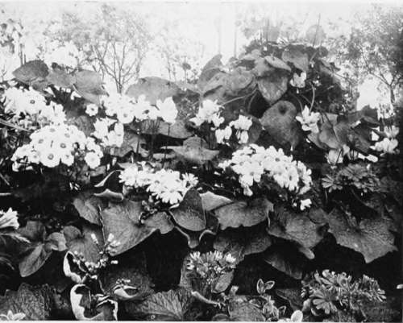

IX. Pruning And Training
Description
This section is from the book "Indoor Gardening", by Eben E. Rexford. Also available from Amazon: Indoor Gardening.
IX. Pruning And Training
FEW amateur gardeners give much attention to the pruning and training of their plants while they are small. Here is where they make a serious mistake. Both should begin while the plant is tractable, and both should continue, as the plant- develops, until it has practically completed its growth, if a plant grown in the house can ever be said to do that. A plant that has been neglected in these respects, when in the formative period of its existence, and allowed to grow to suit itself until it has become of considerable size, can seldom be made to take on a symmetrical shape by any amount of after attention. The time to prune and train is while the plant is developing. It should be as pleasing in general appearance while small as after it has attained good size. The wise gardener will aim to make his or her plants attractive in shape from the start.
Most plants will send out branches where none are needed. These should be promptly removed. We cannot afford to have the vitality of our plants expended on the production of unnecessary growth. Check this tendency as soon as discovered, and, by so doing, throw the strength of the plant into that portion of it which is to be more or less permanent.
If a plant, or any branch of it, exhibits no tendency to produce side-branches, and these are desired, nip off the end of it. This, as a general thing, will cause branches to start along the stalk below. If one nipping does not produce the desired effect, nip again, and keep on doing so until you have as many branches as you think necessary. Patient persistence, in this respect, will almost always conquer the most stubborn plants.
Nipping off the top of a plant when it is small causes it to develop several branches near its base, in most instances. Therefore, by checking the upward growth of a plant when small, you force it to take on a bushy, shrub-like form. This form will be found most satisfactory for the average house-plant.
If you prefer a tree form for your plant, allow but one stalk to grow until it has reached the height where you would like to have it form a head, before you do anything to interfere with its growth upward. But remove, promptly, all branches that start along the stalk. When the plant is as tall as you care to have it, nip off its top. Branches will generally start in many places below, but allow none except those nearest the top to grow. These are to form the foundation for the head of your little tree. There should be several of these in order to secure most satisfactory results. When they have grown to be four or five inches long, nip off their ends. This will cause other branches to start near the extremity of the main stalk, or along their own length, and in this way a thick, bushy head can be developed. But constant attention must be given. Some branches will be inclined to get the start of others, and if they are allowed to do this they will appropriate more than their share of nutriment, and the smaller, but no less important, ones will suffer in consequence. Watch your plant, and prune as needed all through its periods of development, doing the work promptly and persistently.
I said that I consider most plants most effective when trained in bush form. Some sorts, however, take more kindly to the standard or tree form. But not all can be trained in either of these forms, as you may elect, because their natural habits of growth may be contrary to these systems of training. Know your plant, and train it after the fashion to which it seems most adaptable,-the form most in harmony with its general characteristics.
Some plants will require support almost from the start. These are kinds of slender habit, like most varieties of the Fuchsia, the Heliotrope, and others which develop tops too heavy for their stalks to support unaided. Neat, substantial stakes should be provided, and the main stalk should be fastened to them as they reach upward. Do not use ordinary string as a fastening, as it will be likely to cut into the soft, tender wood of the young plant. Strips of cloth are better. Tie firmly, but not tightly.
Plants of trailing or drooping habit are spoiled when trained in upright form. Never attempt to go contrary to Nature in training any plant. Simply assist it to grow in the form Nature chose for it away back in the early days of her gardening experience. The natural tendency of a plant generally manifests itself while it is small, and this should be your guide in the matter of training.
Ginerarias.
Plants like the Boston Fern, with long, spreading, and gracefully drooping foliage, should be given positions on brackets, well up the wall, to be most effective. Many of the Begonias, having large leaves and long stalks, should be treated similarly. Few plants of the habit referred to are worth growing in the living-room unless they are given liberty to follow out their instincts as to the disposal of their branches. Crowd them down among ordinary plants and they lose their individuality, and are never pleasing.
Plants which produce their flowers at the extremity of their branches should be treated in such a manner as to secure as many branches as possible if you want a good showing of flowers from them. This is done by nipping and pinching back, as advised above, until you have all the branches you want.
Old, neglected plants can often be made over into pleasing specimens by cutting away nearly all their old top and forcing them to renew themselves. This is hardly worth while, however, unless the plant is one of a rare kind. Even then it is generally more satisfactory to take a cutting from the old plant and thereby secure a new one which can be trained intelligently and properly from the start.
More specific advice as regards training will be given in the chapters treating on the culture of the various plants adapted to indoor gardening.
Continue to: